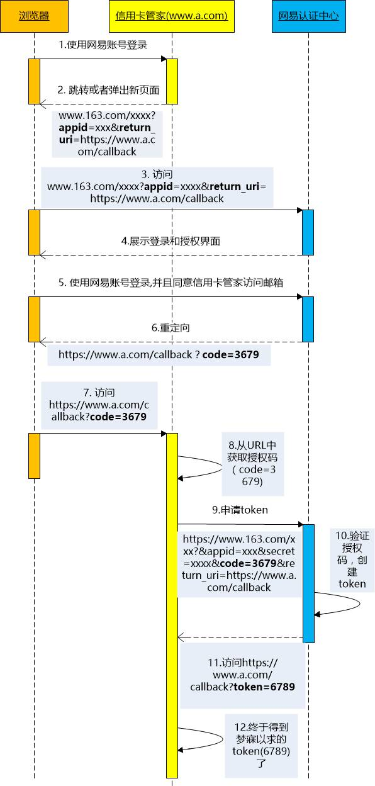
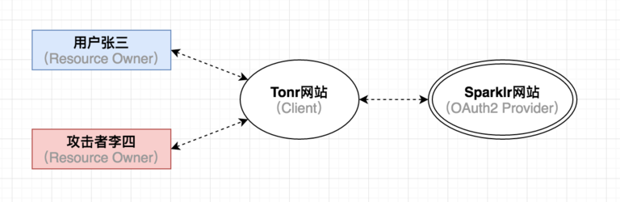
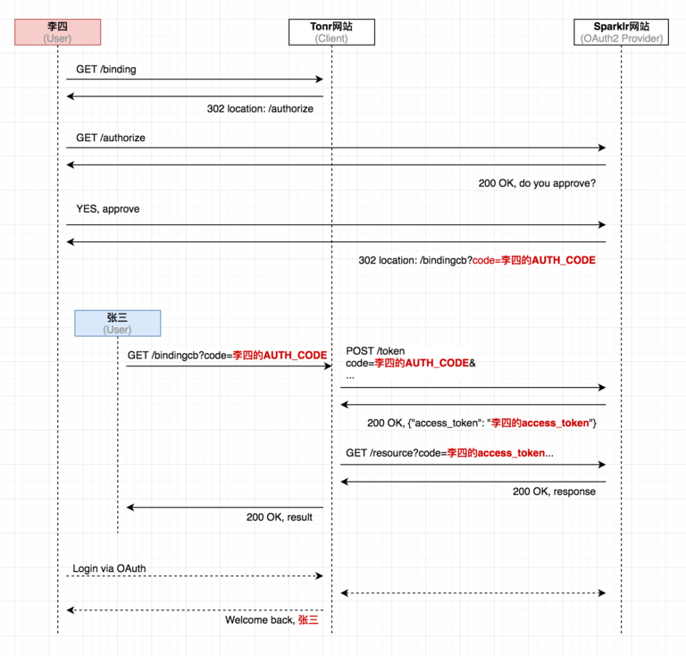

OAuth 授权工作原理
前言
OAuth 是一个关于授权的开放网络标准，在全世界得到广泛应用，目前的版本是 2.0 版。
内容
一、应用场景
在互联网中，主要应用于第三方登录，比如微信登录、QQ 登录、FaceBook 登录。
OAuth 就是一种授权机制。数据的所有者告诉系统，同意授权第三方应用进入系统，获取这些数据。系统从而产生一个短期的进入令牌（token），用来代替密码，供第三方应用使用。
二、OAuth2 机制实现流程
OAuth 认证的整个运行流程：
- 客户端在自己站点实现 163 的第三方认证之前，需要到 163 服务提供商申请帐号，其中的账号有两张门票，一张门票叫 App Id，另一张门票叫做 Secret。
- 登录网站
a.com。 - 重定向到网易授权登录，带上回调地址
www.163.com?appid=xxx&return_uri=a.com/callback。 - 在网易中会带上具体授权的类型（可自定义选择权限），然后输入网易账号和密码，提交登录。
- 登陆后被重定向会
a.com?code=123带上一个授权码code。 - 接下来
a.com会根据code和另一张门票Secret，去请求网易服务器（该请求是 POST 的），获取网易颁发的token。 - 接下来
a.com直接使用token去网易服务器获取数据。 - 登录成功。

三、针对 OAuth2 的 CSRF 攻击
- 攻击流程
- 受害者张三(Resource Owner)视角
- Tonr 网站(Client)视角
- Sparklr 网站(OAuth2 服务提供者)视角
- 攻击者李四视角
- 上帝视角
- 漏洞的本质
- 前提条件
- 防御办法
3.1 攻击流程
让我们来看一个针对 OAuth2 的 CSRF 攻击的例子。假设有用户张三，和攻击者李四，还有一个第三方 Web 应用 Tonr，它集成了第三方社交账号登录，并且允许用户将社交账号和 Tonr 中的账号进行绑定。此外还有一个 OAuth2 服务提供者 Sparkir。

- 攻击者李四登录 Tonr 网站，并且选择绑定自己的 Sparkir 账号
- Tonr 网站将李四重定向到 fSparkir，由于他之前已经登录过 Sparkir，所以 Sparkir 直接向他显示“是否授权 Tonr 访问”的页面。
- 李四在点击“同意授权”之后，截获 Sparkir 服务器返回的含有 Authorization Code 参数的 HTTP 响应。
- 李四精心构造一个 Web 页面，它会触发 Tonr 网站向 Sparkir 发起令牌申请的请求，而这个请求中的 Authorization Code 参数正是上一步获到的 code。
- 李四将这个 Web 页面放到互联网上，等待或者诱骗受害者张三来访问。
- 张三之前登录了 Tonr 网站，只是没有把自己账号和其他社交账号绑定起来。在张三访问了李四准备的这处 Web 页面后，令牌申请流程在张三的浏览器里被顺利触发，Tonr 网站从 Sparkir 那里获取到 access_token，但是这个 token 以及通过它进一步获取到的用户信息却都是攻击者李四的。
- Tonr 网站将李四的 Sparklr 账号同张三的 Tonr 账号关联绑定起来，从此以后，李四就可以用自己的 Sparklr 账号通过 OAuth 登录到张三在 Tonr 网站中的账号，堂而皇之的冒充张三的身份执行各种操作。
等等，这一切发生得太快，还没看清楚李四怎么就登录到张三的账号里去了。没关系，让我们从几个不同的角度来看看这当中发生了什么。
3.2 受害者张三(Resource Owner)视角
受害者张三访问了一个 Web 页面，然后，就没有然后了，他在 Tonr 网站上的账号就和攻击者李四在 Sparklr 上的账号绑定到了一起。伪造的请求是经过精心构造的，令牌申请这一过程在张三的浏览器里是非常隐蔽的被触发的，换句话讲就是，他根本不知道这背后发生了什么。
3.3 Tonr 网站(Client)视角
从 Tonr 网站来看，它收到的所有请求看上去都是正常的。首先它收到了一个 HTTP 请求，其代表着当前用户张三在 SparkIr 网站上已经做了“同意授权”操作。其内容如下：
GET /bindingCallback?code=AUTHORIZATION_CODE
不过需要注意的是，URL 里的 code 不是当前受害者张三的 Authorization Code，而是攻击者李四的。
当 Tonr 收到这样的请求时，它以为张三已经同意授权（但实际上这个请求是李四伪造的），于是就发起后续的令牌申请请求，用收到的 Authorization Code 向 Sparklr 换取 access_token，只不过最后拿到的是攻击者李四的 access_token。
最后，Tonr 网站把攻击者李四的 access_token 和当前受害者张三在 Tonr 网站上的账号进行关联绑定。
3.4 Sparklr 网站(OAuth2 服务提供者)视角
Sparklr 网站也是一脸茫然的样子，因为在它看来，自己收到的授权请求，以及后续的令牌申请请求都是正常的，或者说它无法得知接收到的这些请求之间的关联关系，而且也无法区别出这些请求到底是来自张三本人，还是由李四伪造出来的。因此只要自己收到的参数是正确有效的，那就提供正常的认证服务，仅此而已。
3.5 攻击者李四视角
李四伪造了一个用户授权成功的请求，并且将其中的 Authorization Code 参数替换成了自己提前获取到的 code。这样，当受害者张三的浏览器被欺骗从而发起令牌申请请求时，实际上是在用张三在 Tonr 网站的账号和李四在 SparkIr 网站上的账号做绑定。
攻击完成后，李四在 Tonr 网站上可以通过自己在 Sparkir 网站的账号进行登录，而且登录进入的是张三在 Tonr 网站上的账号。而张三通过自己在 Tonr 网站上的账号登录进去之后，看到的是李四在 SparkIr 网站上的数据。
3.6 上帝视角
从整体上来看，这次攻击的时序图应该是下面这个样子的：

3.7 漏洞的本质
这个总是的关键点在于，OAuth2 的认证流程是分为好几步来完成的，在图 1 的第 4 步，第三方应用在到收到一个 GET 请求时，除了能知道当前用户的 cookie，以及 URL 中的 Authorization Code 之外，难以分辨出这个请求到底是用户本人的意愿，还是攻击者利用用户的身份伪造出来的请求。于是乎，攻击者就能使用移花接木的手段，提前准备一个含有自己的 Authorization Code 的请求，并让受害者的浏览器来接着完成后续的令牌申请流程。
3.8 前提条件
尽管这个攻击既巧妙又隐藏，但是要成功进行这样的 CSRF 攻击也是需要满足一定前提条件的。
- 首先，在攻击过程中，受害者张三在 Tonr 网站上的用户会话必须是有效的，也就是说，张三在受到攻击前已经登录了 Tonr 网站。
- 其次，整个攻击必须在短时间内完成，因为 OAuth2 提供者颁发的 Authorization Code 有效期很短， OAuth2 官方推荐的时间是不大于 10 分钟，而一旦 Authorization Code 过期那么后续的攻击也就不能进行下去了。
- 最后，一个 Authorization Code 只能被使用一次，如果 OAuth2 提供者收到重复的 Authorization Code，它会拒绝当前的令牌申请请求。不止如此，根据 OAuth2 官方推荐，它还可以把和这个已经使用过的 Authorization Code 想着联的 access_token 全部撤销掉，进一步降低安全风险。
3.9 防御办法
要防止这样的攻击其实很容易，作为第三方应用的开发者，只需在 OAuth 认证过程中加入 state 参数，并验证它的参数值即可。具体细节如下：
- 在将用户重定向到 OAuth2 的 Authorization Endpoint 去的时候，为用户生成一个随机的字符串，并作为 state 参数加入到 URL 中。
- 在收到 OAuth2 服务提供者返回的 Authorization Code 请求的时候，难接收到的 state 参数值。如果是正确合法的请求，那么此时接受到参数值应该和上一步提到的为该用户生成的 state 参数值完全一致，否则就是异常请求。
- state 参数值需要具备下面几个特性：
- 不可预测性：足够的随机，舍不得攻击难以猜到正确的参数值
- 关联性：state 参数值和当前用户会话（user session）是相互关联的
- 唯一性：每个用户，甚至每次请求生成的 state 参数值都是唯一的
- 时效性：state 参数一旦被使用则立即失效
参考资料
- 简述 OAuth 2.0 的运作流程
- 移花接木：针对 OAuth2 的攻击
- OAuth 授权的工作原理是怎样的？足够安全吗？
- 理解 OAuth 2.0
- 第三方登录 OAuth
- 【全栈修炼】OAuth2 修炼宝典
联系作者
平凡世界，贵在坚持。